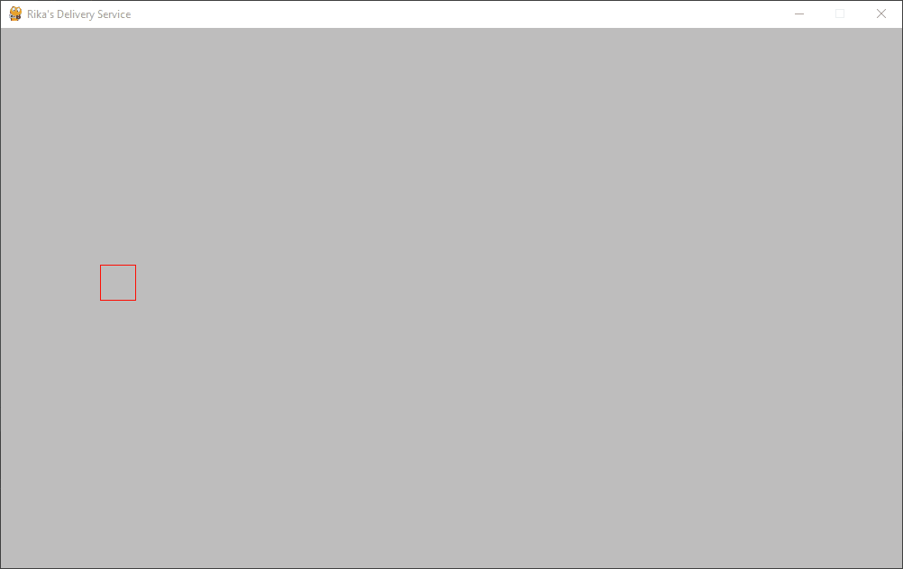

Thank you everyone for being so patient with updates and big thanks to those that contributed to the Kickstarter. Rika's Delivery Service is coming along great. As you can see, the player movement has been implamented. She can move left, and also, she can move right, as most witches can. Right now she is a red box but that will soon be updated.
Exciting update! Rika now has an idle animation loop - assets were obtained from Elthen and modified with Aseprite to make the witch less scary looking. I've also adjusted the movement to make the flying a bit more "glidey". More exciting things to come.
New update, featuring... clouds! Also added a bit of a rotational movement to Rika and resized the images